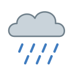
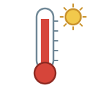

Unit 13
天氣Weather
落雨, 打風 and the four seasons, how hot it is with 好, 幾 and 太, and friendly advice with 啦: 帶遮啦！
Learn
Weather and seasons
Sun, rain and typhoons, hot and cold, 好熱 幾熱 太熱, temperatures, 會, and 啦.
GameForecast
Hear the forecast and find the day, give advice for the weather, and tell 好熱 from 太熱.

GameTone Detective
Hear a weather word and pick its tones. 冬 or 凍?

SpeakingSay It Back
Record yourself and compare your tones with a native speaker's pitch curve.